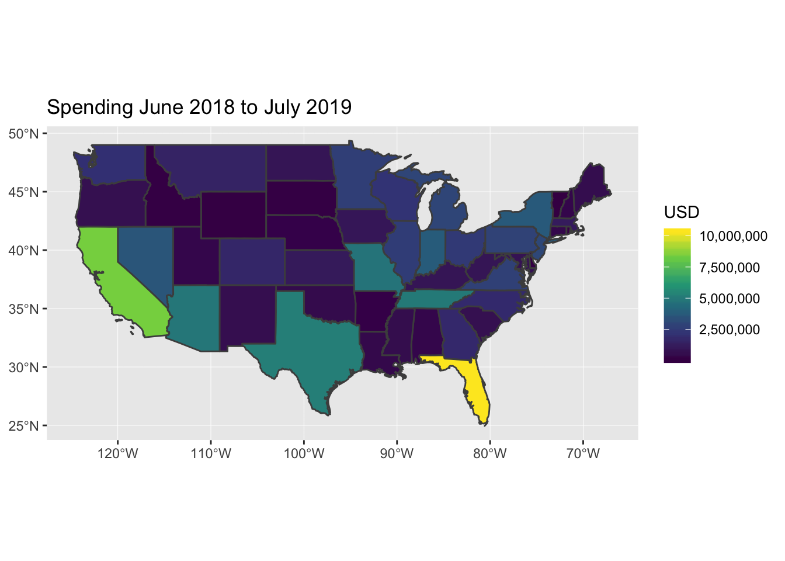

Geographic Distribution of Political Spending in U.S. (2018-2019)
Will Godwin
8/8/2019
Intro
Money diverted to political advertising has become a massive industry as technology has brought us high-speed internet and political organizations are able to form superPACs. Understanding where in the U.S. this money is focused can provide insight into what populations and regions of the country political candidates want to target. Google, to its credit, releases spending on political ads for its platform in a easily accessible manner, which makes this investigation much easier. Here I show U.S, state-level maps of spending on political ads since June 2018.
After downloading the data and performing some rudimentary cleaning, the data are ready to map. You can find all the code I used for this analysis on my github. The first map below shows absolute spending from June 2018-July 2019. Clearly, California and Florida stand out as the top recipients of political ad dollars. However, there are some surprising states near the top as well, with Texas, Arizona, Missouri, and Tennessee all receiving more that 4 million dollars since June 2018. 
However, this trend could be confounded by population. In order to get a perspective on how much any one person may encounter a google political ad by state, the map needs to be population-weighted. The map below shows spending after population adjustment. With spending over $1000 per 1000 people, Montana, North Dakota, and Nevada take the top spots which is not as surprising considering these states have some of the lowest population sizes and greatest representation in the Senate. Notably, this map shows that Tennessee, Missouri, and Arizona rank high not only in absolute spending but in relative spending.

Future posts will dive into the temporal distribution and political leanings of political ad spending.